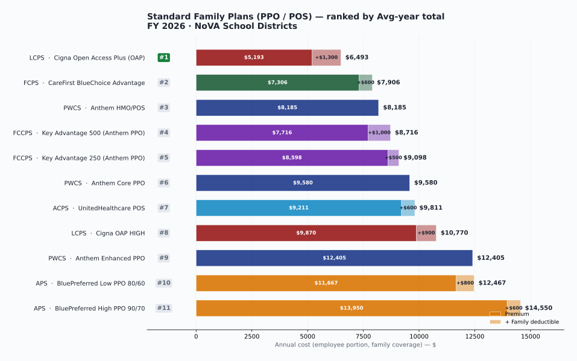
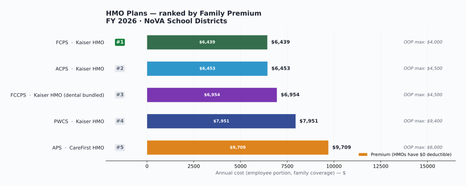
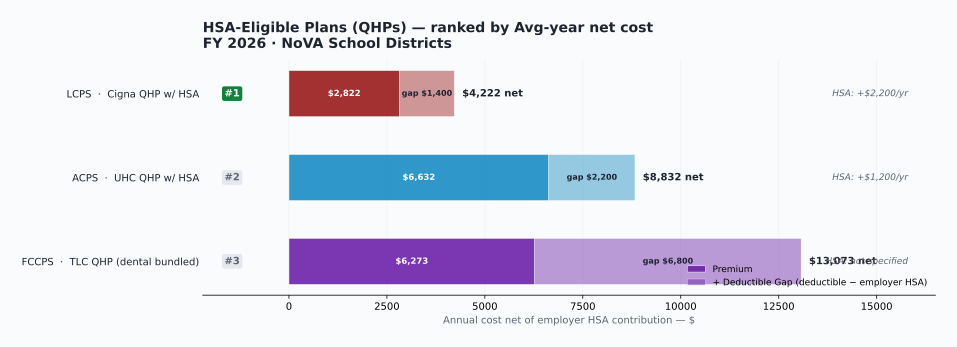

Quick mobile summary
Six districts compared: ACPS · FCPS · APS · FCCPS · LCPS · PWCS
Salary highlights: PWCS leads on entry-level pay. APS leads on early-career MA. ACPS leads on mid-career MA top.
Healthcare highlights: LCPS is the cheapest in every category for a family. FCPS is the cheapest standard PPO. PWCS uniquely offers $0 in-network deductible across all 4 plans.
Two ranking lenses for healthcare: Standard PPO/POS plans are ranked by predictability (premium + family deductible). QHPs are ranked separately by premium + deductible − employer HSA contribution, with a "deductible gap" column showing upfront cash exposure. Neither is universally better; they fit different households.
Tip: tables scroll horizontally — swipe left/right to see all districts. Tap any "Click to expand" toggle for deep dives.
Quick-Compare Dashboard All 6 NoVA districts · the seven numbers most people ask about · swipe right to see more →
| Comparison metric | ACPS Alexandria |
FCPS Fairfax |
APS Arlington |
FCCPS Falls Church |
LCPS Loudoun |
PWCS Prince William |
|---|---|---|---|---|---|---|
| Bachelor's start (Step 1, 0 yrs) | $57,207 | $61,747 | $57,810 | $60,003 | $60,553 | $62,562 |
| Master's start (Step 1, 0 yrs) | $64,988 | $67,921 | $66,186 | $66,432 | $66,562 | $68,562 |
| Master's at 5 years experience | $74,747 | $73,463 | $76,727 | $74,770 | $74,800 | $74,119 |
| Master's at 10 years experience | $90,067 | $85,116 | $88,948 | $87,947 | $86,995 | ~$85,000 (TBD) |
| Teacher contract length (days) | 195 | 195 | 200 | 200 | 197 | 195 |
| Cheapest healthcare per yr — Employee Only | $2,423 Kaiser HMO |
$1,344 Kaiser HMO |
$2,297* CareFirst HMO |
$1,858 QHP w/ dental |
$139 QHP |
$440 Kaiser HMO |
| Cheapest healthcare per yr — Family (any plan type) | $6,453 Kaiser HMO |
$6,439 Kaiser HMO |
$9,709* CareFirst HMO |
$6,273 QHP w/ dental |
$2,822 QHP |
$7,951 Kaiser HMO |
| Cheapest HMO — Employee Only | $2,423 Kaiser HMO |
$1,344 Kaiser |
$2,297* CareFirst HMO |
$2,071 Kaiser HMO (dental incl) |
— not offered | $440 Kaiser HMO |
| Cheapest HMO — Family | $6,453 Kaiser HMO |
$6,439 Kaiser |
$9,709* CareFirst HMO |
$6,954 Kaiser HMO (dental incl) |
— not offered | $7,951 Kaiser HMO |
| Family PPO/POS plan — main option per district (not HMO, not QHP) | $9,211 UHC POS |
$7,306 CareFirst BlueChoice Advantage |
$11,667* BluePreferred Low PPO 80/60 |
$7,716 Key Advantage 500 (dental incl) |
$5,193 Cigna OAP |
$9,580 Anthem Core PPO ($0 ded) |
| Supplemental retirement (above VRS) |
Principal Financial DB pension 1.5% mandatory EE contribution 0.40% × avg monthly pay × service multiplier 5-year vesting |
ERFC 2001 Tier 2 DB pension (most generous in NoVA) 3% mandatory EE contribution 0.8% × 5-yr highest avg salary × service 5-year vesting · Rule of 90 retirement |
None (VRS only) 403(b)/457 voluntary with $240/yr match (or 0.4% of base, whichever greater) APS uniquely lacks a supplemental DB plan |
VRS only (pending verification) 403(b)/457 voluntary plans available No supplemental DB plan documented in folder |
VRS only 403(b) elective deferral & 457 deferred compensation available VRS Hybrid voluntary match applies separately No supplemental DB plan |
VRS only — but with 2.5% Hybrid match 403(b)/457 with PWCS match on a years-of-service schedule VRS Hybrid: 2.5% PWCS match on 4% voluntary EE contribution No supplemental DB plan |
| District extras — perks beyond pay, medical, and retirement |
• HSA option ($600 ind / $1,200 family employer contribution) • EyeMed standalone vision incl. new Eye360 PLUS tier • SpEd teachers receive +1 step on hire |
• 2-Employee couple discount on family medical • Cheapest dental in NoVA ($30/yr Aetna DNO) • 14 sick days/yr · 6 usable as personal leave • Six lanes incl. PhD |
• 200-day contract (5 extra days vs 195) • Published advanced-degree stipends ($1,224 MA / $2,040 PhD) • Professional Standards stipends for support staff ($636–$1,593) • CAP1/CAP2 career advancement program |
• Highest employer cost-share (Board pays 80% individual / 75% family) • Comprehensive Delta Dental BUNDLED into medical premium • 200-day contract · 5 lanes incl. Bachelor's +18 (unique) |
• LCPS-funded HSA $1,100 ind / $2,200 family on QHP • $5,000 Critical Illness Policy free with QHP • $234/yr opt-out credit if you waive coverage • 197-day contract |
• $0 in-network deductible on all 4 medical plans • Largest 2-Employee couple discount (Kaiser Family $7,951 → $879) • Vision bundled into medical · 3 tuition reimbursement programs • New 2-yr PWEA contract: 7% raise FY27 · 6.4% FY28 |
★ = lowest cost or highest pay among the six districts for that row.
* APS premium dollar amounts pending verification against APS Procurement RFP 30FY26 Appendix S.
"MA at 5 years" and "MA at 10 years" use each district's published placement rule (ACPS Step = years; FCPS Step 3 covers 4–6 yrs & Step 7 = 10 yrs; APS & FCCPS positional). PWCS Master's at 10 yrs not yet extracted from Exhibit A — pending.
Healthcare figures are the lowest-premium plan at each district (employee paycheck deduction × pays per year). FCCPS premiums include comprehensive dental bundled in. APS, ACPS, FCPS, LCPS, and PWCS charge dental separately.
★ marks the leader on each row. PWCS leads entry pay · APS leads early-career MA · ACPS leads mid-career MA · LCPS leads healthcare cost · FCPS leads supplemental retirement. Full reading guide ▸
Detailed dashboard reading guide
LCPS healthcare costs lead in every category — cheapest EE-only ($139), cheapest Family ($2,822), cheapest Family PPO/POS ($5,193 OAP). FCPS uniquely offers the ERFC 2001 supplemental DB pension (0.8% multiplier) on top of VRS. ACPS adds a smaller Principal-managed DB plan. APS, FCCPS, LCPS, and PWCS rely on VRS alone, with varying voluntary 403(b)/457 match richness.
The "District extras" row in the dashboard captures the structural features that don't fit neatly into the salary or premium columns — couple discounts, advanced-degree stipends, contract-day differences, employer cost-share, etc.
{kind=link}
{kind=link}
{kind=link}
{kind=link}
{kind=link}
Standard Family Plans (PPO/POS) — ranked by predictability
Sorted by avg-year total = premium + family deductible, OOP max as tiebreaker. Why this formula? ▸

Why this formula and why split from QHPs?
Avg-year total approximates what a family pays in a moderate-use year — one where they hit the deductible through routine care but don't reach the OOP max. Lower number = more predictable, lower-cost choice for a household that uses healthcare regularly.
QHPs (HSA-eligible HDHPs) follow different math: premium savings offset against employer HSA contributions and a deductible gap. Mixing them with standard PPO/POS plans in one ranking obscures both. QHPs are ranked in their own table below.
| Rank | District | Plan | Family Premium | Family Deductible (in-net) | Avg-year total | OOP max (family) | Plan notes |
|---|---|---|---|---|---|---|---|
| 1 | LCPS | Cigna Open Access Plus (OAP) | $5,193 | $1,300 | $6,493 | $5,000 | $20 PCP / $40 specialist · 10% coinsurance · $150 ER · No referrals. Cheapest predictable family plan in NoVA. |
| 2 | FCPS | CareFirst BlueChoice Advantage | $7,306 | $600 | $7,906 | $5,000 | $10 PCP / $20 specialist after ded · Lowest family deductible of any standard PPO. Lowest family OOP max tied with LCPS OAP. |
| 3 | PWCS | Anthem HMO/POS | $8,185 | $0 | $8,185 | $5,000 | $0 in-network deductible. $20 PCP / $40 specialist (PCP referral required). 2-EE couple drops Family rate to $905/yr. |
| 4 | FCCPS | Key Advantage 500 (Anthem PPO) | $7,716 | $1,000 | $8,716 | $8,000 | $25 PCP / $40 specialist · 20% coinsurance · Comprehensive Delta Dental bundled into premium. Anthem state plan. |
| 5 | FCCPS | Key Advantage 250 (Anthem PPO) | $8,598 | $500 | $9,098 | $6,000 | $20 PCP / $35 specialist · Copay-based in-network (no coinsurance). Comprehensive Delta Dental bundled. Lower deductible than KA 500. |
| 6 | PWCS | Anthem Core PPO | $9,580 | $0 | $9,580 | $8,000 | $0 in-network deductible. $25 PCP / $50 specialist · Inpatient $400 + 20%. 2-EE couple drops Family rate to $1,907/yr. |
| 7 | ACPS | UnitedHealthcare POS | $9,211 | $600 | $9,811 | $8,000 | $20 PCP / $35 specialist · 10% coinsurance. Highest OOP max of any standard PPO/POS in this list ($8,000 family). |
| 8 | LCPS | Cigna OAP HIGH | $9,870 | $900 | $10,770 | $7,000 | $20 PCP / $40 specialist · 0% in-network coinsurance after deductible. Most generous in-network coverage of any plan here. |
| 9 | PWCS | Anthem Enhanced PPO | $12,405 | $0 | $12,405 | $5,000 | Richest PWCS PPO. $0 deductible · $20 PCP / $35 specialist · $2,500/$5,000 OOP max. 2-EE couple drops Family rate to $3,838/yr. |
| 10 | APS | CareFirst BluePreferred Low PPO 80/60 | $11,667* | $800 | $12,467 | $6,000 | $30 PCP / $60 specialist · 20% in-network coinsurance · $250 ER. *Premium pending verification. |
| 11 | APS | CareFirst BluePreferred High PPO 90/70 | $13,950* | $600 | $14,550 | $6,000 | Richest APS PPO. $30 PCP / $60 specialist · 10% coinsurance. $200 ER (lowest of any plan). *Premium pending verification. |
Avg-year total = annual family premium + family in-network deductible. Approximates a year where the family meets the deductible through routine care but doesn't exceed the OOP max.
Pay frequencies vary across districts: ACPS & APS & FCCPS = 24 semi-monthly · FCPS = 20 biweekly · LCPS = 26 biweekly · PWCS = 20 biweekly (10-month staff). All premiums converted to annualized cost.
* APS premium dollar amounts pending verification against APS Procurement RFP 30FY26 Appendix S.
HMO Plans — ranked separately
Sorted by family premium (HMOs have $0 deductible, so premium = avg-year cost). LCPS does not offer an HMO. When does an HMO make sense? ▸
When does an HMO make sense? Why ranked separately?
HMOs trade cheaper premiums and $0 deductibles for a restricted network and no out-of-network coverage (except emergencies). For Kaiser plans, that means using only Kaiser facilities and Kaiser doctors — no Kaiser, no covered care.
Best fit: families who live near a Kaiser medical center, don't have a strong preference for an existing non-Kaiser doctor, and value the lower premium + integrated care model. Worst fit: families who travel often, have providers outside the HMO network, or prefer maximum specialist choice.
Ranked separately because the network constraint is fundamentally different from PPO/POS plans (broad networks, out-of-network covered at higher cost) and QHPs (deductible-first spending). Don't compare an HMO premium directly to a PPO premium without factoring in the network restriction.

| Rank | District | Plan | Family Premium | Deductible | OOP Max (family) | Catastrophic ceiling | Plan notes |
|---|---|---|---|---|---|---|---|
| 1 | FCPS | Kaiser Permanente | $6,439 | $0 | $4,000 | $10,439 | $20 PCP / $40 specialist · $250 ER · Lowest family OOP max of any HMO. Kaiser network only. |
| 2 | ACPS | Kaiser HMO | $6,453 | $0 | $4,500 | $10,953 | $20 PCP / $30 specialist · $200 ER. Kaiser network only. |
| 3 | FCCPS | Kaiser Permanente HMO | $6,954 | $0 | n/a* | n/a* | $25 PCP / $40 specialist · Inpatient $300/admission · Outpatient surgery $75. Liberty Dental bundled into premium. *OOP max not extracted from plan summary. |
| 4 | PWCS | Kaiser Permanente | $7,951 | $0 | $9,400 | $17,351 | $15 PCP / $25 specialist · $100 ER · Lowest copays of any HMO but highest OOP max ($9,400 family). 2-EE couple drops Family rate to ~$880/yr. |
| 5 | APS | CareFirst HMO* | $9,709* | $0 | n/a* | n/a* | Most expensive HMO in NoVA. The only HMO not on the Kaiser network — uses CareFirst HMO. *Premium and OOP max pending verification (RFP 30FY26 Appendix S). |
Avg-year = premium (HMOs have $0 deductible, so the deductible adder doesn't apply). Catastrophic ceiling = premium + family in-network OOP max. LCPS does not offer an HMO option. 4 of the 5 HMOs use the Kaiser Permanente network.
HSA-Eligible Plans (QHPs) — ranked separately
Sorted by avg-year net = premium + family deductible − employer HSA contribution. The "deductible gap" column shows upfront cash exposure. Why this formula? ▸

Why QHPs need their own ranking
A QHP isn't just a "cheaper plan with a higher deductible." The financial structure is different: low premium offset against an employer HSA contribution, with the family responsible for a deductible gap = family deductible − employer HSA. That gap is the upfront cash exposure your household must absorb before insurance shares costs.
Small gap = the QHP is well-funded. Large gap = volatility shifts to the household. Neither outcome is "better" in the abstract — workable for healthy families with savings; harder for families with chronic care or thin cash reserves.
| Rank | District | Plan | Family Premium | Employer HSA | Family Deductible | Deductible Gap | Avg-year net | Takeaway |
|---|---|---|---|---|---|---|---|---|
| 1 | LCPS | Cigna QHP w/ HSA | $2,822 | +$2,200 | $3,600 | $1,400 | $4,222 | Strongest QHP by far. Premium dramatically below market, employer fully funds most of the deductible, $5,000 free Critical Illness Policy bundled. Volatility tolerance required: roughly $1,400 of upfront cash to bridge the deductible gap. |
| 2 | ACPS | UHC QHP w/ HSA | $6,632 | +$1,200 | $3,400 | $2,200 | $8,832 | Reasonable if healthy / HSA-ready. Premium savings vs. ACPS UHC POS is meaningful (~$2,500/yr); employer covers about a third of the family deductible. Best for households who max out the HSA and don't have heavy chronic care. |
| 3 | FCCPS | TLC QHP (dental bundled) | $6,273 | not specified | $6,800 | $6,800 | $13,073 | Comprehensive Delta Dental bundled. Mainly for low-use or HSA-aggressive households. No disclosed employer HSA contribution + a $6,800 family deductible = significant upfront exposure. Average-year cost actually exceeds FCCPS Key Advantage 500 ($8,716) — make sure the HSA tax savings + low utilization justifies the choice. |
Deductible Gap = family deductible − employer HSA contribution. Represents the upfront cash a household needs to absorb in a moderately heavy year before insurance shares costs. Smaller gap = less volatility.
See the QHP explainer toggle below for the full mechanics, IRS rules, and HSA tax-advantage logic.
Other ranking views — lowest premium, catastrophic ceiling, HMOs
Lowest premium (ignores deductible): LCPS QHP $2,822 · LCPS OAP $5,193 · FCCPS TLC QHP $6,273 · ACPS UHC QHP $6,632 · FCPS BlueChoice $7,306. Useful directory, not a "best plan" ranking.
Catastrophic ceiling (premium + OOP max − HSA), low to high: LCPS OAP $10,193 · FCPS BlueChoice $12,306 · PWCS HMO/POS $13,185 · LCPS QHP $13,622 · FCCPS KA 250 $14,598 · FCCPS KA 500 $15,716 · FCCPS QHP $16,273 · LCPS OAP HIGH $16,870 · ACPS POS $17,211 · PWCS Enhanced $17,405 · PWCS Core $17,580 · APS Low $17,667 · ACPS QHP $18,432 · APS High $19,950.
HMOs not shown above — Kaiser plans at ACPS/FCPS/APS/FCCPS/PWCS and APS CareFirst HMO are typically the cheapest tier at each district. See the at-a-glance cards for HMO premiums.
Three-scenario cost breakdown for each plan — Healthy / Average / Catastrophic year
Same plans as above at three utilization levels: Healthy year (premium only), Average year (premium + family deductible), Catastrophic year (premium + OOP max). Useful for seeing the full range before committing.
| District | Plan | Healthy year (premium only) | Family deductible | Average year (prem + ded) | OOP max | Catastrophic year (prem + OOP) |
|---|---|---|---|---|---|---|
| LCPS | Cigna OAP | $5,193 | $1,300 | $6,493 | $5,000 | $10,193 |
| FCPS | CareFirst BlueChoice Advantage | $7,306 | $600 | $7,906 | $5,000 | $12,306 |
| PWCS | Anthem HMO/POS ($0 deductible) | $8,185 | $0 | $8,185 | $5,000 | $13,185 |
| FCCPS | Key Advantage 500 (dental bundled) | $7,716 | $1,000 | $8,716 | $8,000 | $15,716 |
| FCCPS | Key Advantage 250 (dental bundled) | $8,598 | $500 | $9,098 | $6,000 | $14,598 |
| PWCS | Anthem Core PPO ($0 deductible) | $9,580 | $0 | $9,580 | $8,000 | $17,580 |
| ACPS | UnitedHealthcare POS | $9,211 | $600 | $9,811 | $8,000 | $17,211 |
| LCPS | Cigna OAP HIGH | $9,870 | $900 | $10,770 | $7,000 | $16,870 |
| PWCS | Anthem Enhanced PPO ($0 ded) | $12,405 | $0 | $12,405 | $5,000 | $17,405 |
| APS | BluePreferred Low PPO 80/60* | $11,667 | $800 | $12,467 | $6,000 | $17,667 |
| APS | BluePreferred High PPO 90/70* | $13,950 | $600 | $14,550 | $6,000 | $19,950 |
QHP three-scenario breakdown — Healthy / Average / Catastrophic
QHP ranking data shown across three utilization scenarios. See the QHP explainer for full mechanics.
| District | Plan | Premium | Employer HSA contribution | Family deductible | Average year (net) | OOP max | Catastrophic year (net) |
|---|---|---|---|---|---|---|---|
| LCPS | Cigna QHP w/ HSA | $2,822 | +$2,200 | $3,600 | $4,222 | $13,000 | $13,622 |
| ACPS | UHC QHP w/ HSA | $6,632 | +$1,200 | $3,400 | $8,832 | $13,000 | $18,432 |
| FCCPS | TLC QHP (dental bundled) | $6,273 | not specified | $6,800 | $13,073 | $10,000 | $16,273 |
Cross-cutting observations and caveats
- LCPS Cigna OAP — exceptionally well-priced predictable family plan. ~$1,800 cheaper than the next standard PPO/POS in average-year cost.
- FCPS BlueChoice Advantage — strongest non-LCPS standard PPO/POS. Low $600 family deductible, $5,000 OOP max, $12,306 catastrophic ceiling.
- PWCS plans benefit from $0 in-network deductible. Two-employee couples drop the family premium to $905/yr — makes every PWCS plan competitive.
- FCCPS premiums include comprehensive dental that other districts charge $137–$1,116/yr separately for. Effectively $300–$1,000/yr more competitive than the headline.
- LCPS Cigna QHP — only $1,400 deductible gap after the $2,200 employer HSA. Genuinely competitive with the cheapest standard PPOs for HSA-disciplined families.
- FCCPS TLC QHP — no disclosed employer HSA + $6,800 deductible. Avg-year cost ($13,073) exceeds FCCPS KA 500 ($8,716). Only for low-utilization or HSA-aggressive households.
- APS High PPO 90/70 — highest catastrophic-year cost ($19,950) despite good 10% coinsurance. The premium is the killer.
Caveats: Avg-year is an approximation — some plans waive deductible for office visits, others require deductible-first. Catastrophic year is a real ceiling. * APS premiums pending verification against RFP 30FY26 Appendix S.
What's a Qualified Health Plan (QHP) and how does the HSA actually work? Click to expand →
What "QHP" actually means
"Qualified Health Plan" (QHP) is plan-industry shorthand for "this plan qualifies for pairing with a Health Savings Account under IRS Section 223 rules." It's not really a plan TYPE in the traditional sense — it's a label that says "this plan meets the IRS's high-deductible health plan rules."
To qualify for HSA pairing, a plan in 2026 must have:
- Minimum deductible of $1,650 individual / $3,300 family (in-network)
- Out-of-pocket max no higher than $8,300 individual / $16,600 family (in-network)
- No coverage of non-preventive services until the deductible is met (with limited exceptions)
Other names you'll see for the same thing: HDHP (high-deductible health plan), HDHP w/ HSA, Qualified High-Deductible Plan, or just HSA-eligible plan. They all describe the same concept.
Network architecture is separate
QHPs sit on top of a network architecture (HMO, PPO, POS, EPO). All three QHPs in this comparison are PPO or POS-style:
- ACPS UHC QHP w/ HSA — built on UnitedHealthcare's Choice Plus POS network. In-network and out-of-network coverage; no PCP referral required.
- LCPS Cigna QHP w/ HSA — built on Cigna's Open Access Plus PPO network. Out-of-network coverage; no PCP referral required.
- FCCPS TLC QHP — built on Anthem's PPO network (The Local Choice). Out-of-network coverage; no PCP referral required. Comprehensive dental bundled into the medical premium.
So when this site groups QHPs into "POS-style plans" alongside the regular PPO/POS plans, that's accurate at the network-architecture level. The "Q" in QHP just adds the HSA-qualification layer on top.
How a QHP works in practice — month by month
Imagine you enroll in a QHP at the start of the year. Here's how a typical year plays out for a family of 4:
- January–March: You go to the doctor for a sick visit. The plan does NOT yet pay anything (preventive care is the exception — that's free at 100% coverage even before deductible). You pay the negotiated rate (~$120 for a PCP visit, ~$200 for a specialist). Your HSA can pay this if you have funds in it.
- Mid-year: You've paid roughly $3,400 (your family deductible) out of pocket on medical services across multiple visits, some Rx, maybe a minor procedure. The plan now starts sharing costs at the coinsurance rate (typically 10%–20% in-network).
- Heavier use through the year: Once your total spending hits the family OOP max ($10,000–$13,000 depending on plan), the plan covers everything in-network at 100%. You can't be charged anything more for in-network care.
- End of year: Whatever's left in your HSA rolls over indefinitely — it's not "use it or lose it." If your employer contributed $2,200 (LCPS) or $1,200 (ACPS) and you didn't spend it, that money stays in your HSA earning interest (and can be invested). It's portable — even if you change jobs, the HSA is yours forever.
The HSA tax advantage (the actual reason QHPs exist)
HSAs are the only triple-tax-advantaged account in the U.S. tax code:
- Tax-deductible going in. Both your contributions (via payroll deduction) and your employer's contributions reduce your taxable income.
- Tax-free growth. Interest, dividends, and investment returns inside the HSA aren't taxed.
- Tax-free coming out — as long as the money is spent on qualified medical expenses (deductibles, copays, prescriptions, dental, vision, etc.).
For 2026, the IRS HSA contribution limits are $4,400 individual / $8,750 family, plus a $1,000 catch-up if you're 55+. Employer contributions count toward these limits.
Because HSAs roll over and grow, many financially-savvy QHP enrollees treat them as a stealth retirement account: pay current-year medical costs out of pocket, save the receipts, and let the HSA grow for 20+ years before reimbursing yourself.
When does a QHP actually beat a traditional plan?
Three conditions need to roughly hold:
- The premium savings vs. the traditional PPO/POS are real and meaningful (typically $2,000–$5,000/yr cheaper for family coverage)
- Your employer contributes a substantial amount to the HSA — at least $1,000 for individual or $2,000 for family. Without an employer contribution, the math gets shaky.
- You're either healthy or willing to fund the HSA aggressively — because in a heavy-use year, you'll be paying full price for services until the deductible is met.
Looking at our three districts:
- LCPS Cigna QHP — clear winner. Premium $2,822 (cheapest family premium in NoVA), employer HSA $2,200, free $5,000 Critical Illness Policy on top. The QHP makes overwhelming sense.
- ACPS UHC QHP — moderate fit. Premium $6,632, employer HSA $1,200. Premium savings vs. ACPS UHC POS is $2,579/yr; HSA contribution is $1,200; net favorable spread is ~$3,800/yr. Reasonable for healthy families, but the standard POS plan ($300 deductible) might be safer for families with kids.
- FCCPS TLC QHP — typically not the best choice. Premium $6,273 (cheaper than KA 250 or KA 500) but family deductible jumps to $6,800, and FCCPS doesn't disclose an employer HSA contribution. Average-year cost is actually higher than FCCPS Key Advantage 500 ($13,073 vs. $8,716). Only worth it if you're very healthy or can fund the HSA aggressively yourself.
Common pitfalls to avoid
- Don't confuse QHPs with regular PPOs. The "POS-style" label refers to network architecture; the QHP designation refers to deductible structure. A QHP requires you to fund medical costs upfront until the deductible is met.
- Watch the HSA contribution timing. If you don't fund the HSA in January, you'll be paying medical bills out of taxable income before the HSA tax savings kick in.
- Out-of-network coverage is real but expensive. All three QHPs allow out-of-network care (since they're built on PPO/POS networks), but at much higher cost-share. A "deductible" applied to out-of-network is often $2x the in-network deductible.
- Preventive care is fully covered before the deductible. Annual physicals, immunizations, well-woman visits, age-appropriate screenings — these are all $0 in-network on a QHP. You don't have to meet the deductible first for preventive care.
- If you change districts mid-year, your HSA goes with you. Your deductible accumulator does not. So a job change creates a fresh deductible at the new district.
At-a-Glance Overview FY 2026 · per-district headline numbers · scroll right for FCCPS, LCPS, PWCS
Alexandria City Public Schools ACPS
Independent city district · ~16 schools · ~16,000 students · ~2,500 staff
Compensation snapshot
Medical insurance — at a glance
Fairfax County Public Schools FCPS
Largest VA district · ~199 schools · ~180,000 students · ~25,000 staff
Compensation snapshot
Medical insurance — at a glance
Arlington Public Schools APS
Independent county district · ~40 schools/programs · ~28,000 students · ~5,000 staff
Compensation snapshot
Medical insurance — at a glance Pending verify
FCCPS · LCPS · PWCS — at-a-glance Three additional NoVA districts · most data verified · admin scales still pending for some
Falls Church City Public Schools FCCPS
Smallest district in NoVA · 4 schools · ~2,700 students · ~450 staff
Compensation snapshot (10-month, 200-day scale)
Medical insurance — at a glance
Loudoun County Public Schools LCPS
Fast-growing district · ~95 schools · ~82,000 students · ~12,000 staff
Compensation snapshot
Medical insurance — at a glance
Prince William County Public Schools PWCS
2nd largest in VA · ~100 schools · ~91,000 students · ~13,500 staff
Compensation snapshot Awaiting PWCS admin scale
Medical insurance — at a glance (FY 2026-27)
What's currently verified for Phase 2:
- FCCPS: FY26 teacher salary scales (10/11/12-month versions) ✓ · FY26 Leadership pay scale (12 grade levels) ✓ · FY27 medical premium schedule (4 plans + cost-share + per-pay deductions) ✓ · Plan-design tables for Kaiser, KA 250, KA 500, HDHP ✓
- LCPS: Full FY26 teacher salary scale ✓ · 2026 medical premiums (3 Cigna plans + dental + vision) ✓ · Plan-design tables ✓ · LCPS-funded HSA + Critical Illness ✓ · Sick leave ✓ · Comprehensive comp resource guide in folder (admin scales pending extraction)
- PWCS: Teacher salary scale (FY26 + announced FY27 raises) ✓ · FY 2026-27 medical premiums (4 plans, all coverage tiers) ✓ · Plan-design tables ✓ · Two-Employee discount ✓ · Bundled vision + Rx ✓ · VRS Hybrid 2.5% match ✓ · Tuition reimbursement programs ✓
- LCPS: Administrator pay scale extraction from comp resource guide (PDF in folder)
- PWCS: Administrator (Grade 13+) pay scale
- ACPS: FY 2026 Administrator salary scale (still on FY25)
Teacher Salary Scales — Detailed Comparison FY 2026 · classroom teachers · 3-district step-by-step deep dive
- 195 days: ACPS, FCPS, PWCS
- 197 days: LCPS
- 200 days: APS, FCCPS (both at 7.5 hrs/day)
| Lane / Step | ACPS 195 days, Steps 1–24 |
FCPS 195 days, Steps 1–25 |
APS 200 days, Steps A–AE |
|---|---|---|---|
| Bachelor's, new hire — 0 years prior experience | $57,207 | $61,747 | $57,810 |
| Bachelor's, new hire — 5 years prior experience | $66,596 | $66,785 | $67,016* |
| Bachelor's, new hire — 10 years prior experience | $79,843 | $76,633 | $77,690* |
| Bachelor's, top of scale | $106,874 | $110,035 | $99,488 |
| Master's, new hire — 0 years prior experience | $64,988 | $67,921 | $66,186 |
| Master's, new hire — 5 years prior experience | $74,747 | $73,463 | $76,727* |
| Master's, new hire — 10 years prior experience | $90,067 | $85,116 | $88,948* |
| Master's, top of scale | $131,024 | $125,099 | $125,758 |
| Master's +30, entry | $67,433 | $69,959 | $68,833 |
| Master's +30, top of scale | $135,145 (Step 24) | $128,851 (Step 25) | $130,787 (Step AE) |
| PhD/Doctorate, entry | Not a separate lane | $71,317 | $71,586 |
| PhD/Doctorate, top of scale | — (MA+30 is top) | $131,353 (Step 25) | $136,019 (Step AE) |
How ACPS structures its scale ACPS
- Lanes: Bachelor's, Master's, Master's +30. No separate PhD lane.
- Steps: 23 steps for BA, 24 for MA and MA+30.
- Initial placement: Steps 1–16 by full-time classroom teaching years. Max experience credited for new hires: 16 years.
- SpEd premium: SpEd teachers receive an additional step upon hire.
- Contract days available: 195 (standard), 206, 216, 240. A 240-day BA Step 1 = $70,409.
How FCPS structures its scale FCPS
- Lanes: BA, BA+15, BA+30, MA, MA+30, PhD. Six lanes (broadest of the three).
- Steps: 25 steps. Initial placement maps years of experience to starting step (0–2 yrs → Step 1; 22 yrs → Step 18).
- Three contract types on FY26 scale: 195-day (standard), Extended Day (≈7% premium), and Additional Teaching Assignment / 6th Period (≈12% premium).
- Pattern: Leads on entry/mid-career pay; ACPS catches up at top of MA and MA+30.
How APS structures its scale APS
- Lanes: Bachelor's (B), Bachelor's +15 (C), Master's (M), Master's +30 (X), Doctorate (D). Five lanes.
- Steps: 31 alpha steps (A through AE). The plan explicitly states "step does not equate to years of experience."
- Contract: 200 days, 7.5 hours/day. Different from ACPS/FCPS 195-day standard.
- FTE split: Separate scales for Retirement-Eligible (≥0.50 FTE) and Non-Retirement-Eligible (<0.50 FTE) teachers.
- Advanced-degree stipend: Published in pay plan — $1,224/yr for Master's, $2,040/yr for Doctorate (E and P scales).
ACPS: Step n = n years of experience (clean 1:1). Capped at Step 16 for new hires. So 5 yrs → Step 5, 10 yrs → Step 10.
FCPS: Step does not equal years. FCPS publishes a placement table that maps experience-year ranges to a step number — and the mapping is uneven:
- 0–2 yrs prior experience → placed at Step 1 ($61,747 BA)
- 3 yrs → Step 2 ($64,216 BA)
- 4, 5, or 6 yrs → Step 3 ($66,785 BA) — this is why a new hire with 5 yrs exp earns the same as one with 4 or 6 yrs
- 7 yrs → Step 4 ($69,456 BA)
- 8 yrs → Step 5; 9 yrs → Step 6; 10 yrs → Step 7 ($76,633 BA)
- 11 yrs → Step 8; 12 yrs → Step 9; 13 yrs → Step 10; 14 or 15 yrs → Step 11
* APS: The APS pay plan explicitly disclaims that "step does not equate to years of experience." Placement is at HR's discretion based on prior experience and credentials. APS values shown (Step F at 5 yrs, Step K at 10 yrs) are positional approximations (one alpha-step per year from Step A); actual APS placement may differ.
Why direct step-to-step comparison is tricky across all six districts
- ACPS: Step n generally equals n years of experience (16-year cap on initial placement).
- FCPS: Step n mapped from a years-of-experience table. Step 1 covers 0–2 years, Step 3 covers 4–6 years, Step 11 covers 14–15 years, etc.
- APS: 31 alpha steps (A–AE). Pay plan explicitly disclaims that "step does not equate to years of experience" — placement is HR-discretion. 200-day contract.
- FCCPS: 5 lanes with up to ~30 numbered steps + 3 longevity tiers. BA caps at Step 15/L3 (~$87,699 on the 10-month/200-day scale); only MA/MA+30/Doctorate continue to longevity steps.
- LCPS: 30 numbered steps. Pay plan explicitly disclaims that "Steps do not equate to years of experience." 197-day contract.
- PWCS: 30 numbered steps + 7 longevity steps (LS1–LS7) for 30+ yrs of service. Per CBA, placement is by completed years of service, but new hires can be subject to PWCS-applied salary caps regardless of prior years.
School-Based Administrator Salaries 3-district side-by-side · ACPS, FCPS, APS
| Position (approximate match) | ACPS — FY25 | FCPS — FY26 | APS — FY26 P-Scale |
|---|---|---|---|
| Assistant Principal, Elementary School | CP grade 240-day: $97,394 → $161,606 | Grade 002 260-day: $114,016 → $173,449 | P-Scale Grade 15: $113,650 → $186,275 (Step A → Step Z) |
| Assistant Principal, Middle School | CP grade 240-day: $97,394 → $161,606 (same grade as elem) |
Grade 002 260-day: $114,016 → $173,449 | P-Scale Grade 15: $113,650 → $186,275 |
| Assistant Principal, High School | DA grade 240-day: $104,246 → $168,756 | Grade 003 260-day: $117,438 → $178,654 | P-Scale Grade 16: $121,605 → $199,314 |
| Dean of Students | CD 240-day: $96,691 → $160,440 (or DA grade for HS) |
Grade 003 260-day: $117,438 → $178,654 | P-Scale Grade 11: $77,658 → $127,284 (11-month / lower than ACPS, FCPS) |
| Principal, Elementary School | FP grade 240-day: $125,947 → $198,910 | Grade 006 260-day: $136,819 → $208,140 | P-Scale Grade 17: $130,117 → $213,267 |
| Principal, Middle School | GP grade 240-day: $132,242 → $208,860 | Grade 006 260-day: $136,819 → $208,140 (Elem & Middle share grade) |
P-Scale Grade 17: $130,117 → $213,267 |
| Principal, High School | I grade 240-day: $155,909 → $222,358 (executive principal) |
Grade 007 260-day: $146,798 → $220,018 | P-Scale Grade 18: $139,226 → $228,196 |
Health, Dental & Vision Insurance 2026 plan year · employee paycheck deduction
Medical premiums — what comes out of your paycheck
The table below covers ACPS, FCPS, and APS side by side. FCCPS, LCPS, and PWCS premium tables are below in the "Plan structure" subsections, each with its own dedicated table because their plan portfolios are structured differently (FCCPS bundles dental, LCPS uses Cigna, PWCS has a 2-employee discount that drops Family rates 89%). The dashboard at the top rolls all 6 districts into a single summary view.
| Plan / coverage tier | ACPS · semi-monthly (24 pays) Full-time licensed/admin |
FCPS · biweekly (20 pays) All benefits-eligible |
APS · semi-monthly (24 pays) FT 30–40 hrs Verify |
|---|---|---|---|
| HMO — Employee Only (ACPS: Kaiser · FCPS: Kaiser · APS: CareFirst HMO) |
$100.95 / pay → $2,423/yr | $67.19 / pay → $1,344/yr | $95.69 / pay → $2,297/yr Verify |
| HMO — Family | $268.86 / pay → $6,453/yr | $321.94 / pay → $6,439/yr | $404.54 / pay → $9,709/yr Verify |
| Main PPO/POS — Employee Only (ACPS: UHC POS · FCPS: CareFirst BlueChoice Advantage · APS: CareFirst Low PPO) |
$143.84 / pay → $3,452/yr | $76.43 / pay → $1,529/yr | $110.87 / pay → $2,661/yr Verify |
| Main PPO/POS — Family | $383.80 / pay → $9,211/yr | $365.30 / pay → $7,306/yr | $486.14 / pay → $11,667/yr Verify |
| Premium PPO — Employee Only (APS only: CareFirst High Option PPO) |
— (no premium PPO tier) | — (no premium PPO tier) | $144.18 / pay → $3,460/yr Verify |
| Premium PPO — Family | — | — | $581.24 / pay → $13,950/yr Verify |
| High-deductible / HSA-eligible — EE Only | $103.56 / pay → $2,485/yr (UHC QHP w/ HSA) |
— Not offered | — Not offered |
| Employer HSA contribution | $600 (ind) / $1,200 (family) per year | N/A — no HSA plan | N/A — no HSA plan |
| 2-employee couple (both work in district) | No discount documented | 2-Employee Family rate = Employee+1 (sizable discount) | Not offered |
Plan structure — what you actually pay for care
| Plan feature | APS — CareFirst BlueChoice HMO (in-network) | APS — BluePreferred Low PPO 80/60 (in-network) | APS — BluePreferred High PPO 90/70 (in-network) |
|---|---|---|---|
| Annual deductible (ind/family) | $0 / $0 | $400 / $800 | $300 / $600 |
| Out-of-pocket max (ind/family) | $2,250 / $4,500 | $3,000 / $6,000 | $3,000 / $6,000 |
| PCP office visit | $15 copay | $30 copay | $30 copay |
| Specialist visit | $20 copay | $60 copay | $60 copay |
| Coinsurance after deductible | N/A — copay only | 20% in-network | 10% in-network |
| Emergency room | $50 copay (waived if admitted) | $250 copay (waived if admitted) | $200 copay (waived if admitted) |
| Out-of-network coverage | None (HMO) | $800 ded ind / $1,600 family · 40% coinsurance · $5,000/$10,000 OOP | $750 ded ind / $1,500 family · 30% coinsurance · $3,750/$7,500 OOP |
APS plan structure verified from APS-Medical-and-Rx-Benefit-Designs.pdf (Appendix M to RFP 30FY26).
FCCPS — four plans (each with Delta Dental or Liberty Dental BUNDLED into the premium)
| Plan feature | Kaiser Permanente HMO | Key Advantage 250 (PPO) | Key Advantage 500 (PPO) | TLC QHP (HSA-eligible HDHP) |
|---|---|---|---|---|
| Annual deductible (ind/family) | $0 / $0 | $250 / $500 (in-network) | $500 / $1,000 (in-network) | $3,400 / $6,800 (combined in/out) |
| Out-of-pocket max (ind/family) | not extracted | $3,000 / $6,000 (in-network) | $4,000 / $8,000 (in-network) | $5,000 / $10,000 (in-network) |
| PCP office visit | $25 copay | $20 copay | $25 copay | 20% after deductible |
| Specialist visit | $40 copay | $35 copay | $40 copay | 20% after deductible |
| Coinsurance after deductible | copay-based | 30% out-of-network only | 20% in-network · 30% out-of-network | 20% in-network · 40% out-of-network |
| Inpatient hospitalization | $300 per admission | $400 per stay | 20% after deductible | 20% after deductible |
| Outpatient surgery | $75 copay | per plan terms | per plan terms | 20% after deductible |
| Preventive care | $0 | $0 | $0 | $0 (100% in-network, no deductible) |
| Lifetime maximum | Unlimited | Unlimited | Unlimited | Unlimited |
| Dental — bundled into premium? | Yes · Liberty Dental | Yes · Delta Dental (preventive-only or comprehensive) | Yes · Delta Dental | Yes · Delta Dental |
| Routine vision exam | covered | covered | covered | One routine eye exam/yr included |
| Family annual premium (employee portion, 24 pays, comprehensive dental version) | $6,954 | $8,598 | $7,716 | $6,273 — cheapest |
FCCPS plan structure verified from folder PDFs: Kaiser Permanente Benefits Summary.pdf, Key Advantage 250 Benefits Summary.pdf, Key Advantage 500 Benefits Summary.pdf, High Deductible Health Plan Benefits Summary.pdf. Premiums from Health Insurance Rates.pdf (FY 2027, July 2026 – June 2027).
LCPS — three Cigna plans (effective January 1, 2026)
| Plan feature | OAP HIGH (Open Access Plus High) | OAP (Open Access Plus) | QHP w/ HSA (HDHP) |
|---|---|---|---|
| Annual deductible (ind/family, in-network) | $450 / $900 | $650 / $1,300 | $1,800 / $3,600 |
| Out-of-pocket max (ind/family, in-network) | $3,500 / $7,000 | $2,500 / $5,000 | $6,500 / $13,000 |
| PCP office visit | $20 copay | $20 copay | 10% after deductible |
| Specialist visit | $40 copay | $40 copay | 10% after deductible |
| Emergency room | $150 copay | $150 copay | 10% after deductible |
| Urgent care | $50 copay | $50 copay | 10% after deductible |
| Lab work / X-rays | Covered in full | 10% after deductible | 10% after deductible |
| Inpatient hospitalization (in-network) | Covered in full after deductible | $200 copay + 10% after deductible | 10% after deductible |
| Coinsurance after deductible | 0% in-network · 20% out-of-network | 10% in-network · 30% out-of-network | 10% in-network · 30% out-of-network |
| Preventive care | $0 (100%) | $0 (100%) | $0 (100%) |
| Employee-only annual premium (26 biweekly pays) | $2,087 | $266 | $139 — cheapest |
| Family annual premium (26 biweekly pays) | $9,870 | $5,193 | $2,822 — cheapest family medical in NoVA |
| LCPS HSA contribution | N/A | N/A | $1,100 (EE only) / $2,200 (family) per year |
| Bonus enrollment perk | — | — | $5,000 LCPS-funded Critical Illness Policy |
LCPS plan structure verified from LCPS_Benefits_Handbook_2025.pdf, page 2-3 (premiums) and 2-4 to 2-6 (plan-design comparison). Salary scale from FY26-Teacher-Salary-Scale---Scale-A-2.pdf.
Why LCPS Cigna QHP is the best HSA-pairing deal in NoVA — click to expand →
The LCPS QHP isn't just "another HDHP." It's a structurally exceptional offer because three things combine that don't happen at any other district:
- The premium is dramatically below market. Family coverage is $2,822/yr vs. ~$6,000–$13,000 at other districts. This is an outlier — likely the result of LCPS's scale, Cigna's negotiation, and a deliberate district decision to encourage HDHP enrollment.
- The employer HSA contribution is the largest in NoVA. $1,100 individual / $2,200 family per year, deposited into your HSA on day one. ACPS contributes $600/$1,200; FCCPS hasn't disclosed an employer HSA contribution; FCPS, APS, and PWCS don't offer QHPs at all.
- Free $5,000 Critical Illness Policy. Bundled with QHP enrollment at no cost. Pays a lump sum if you're diagnosed with a covered serious illness (cancer, heart attack, stroke, kidney failure, etc.). This is genuinely unusual — it's a $200–$500/yr value that LCPS just adds for free if you choose the QHP.
The math: A family choosing the LCPS QHP starts the year at $4,222 effective premium (premium minus HSA contribution). Even in a moderately heavy year where the family meets the $3,600 deductible, total cost is ~$4,222 + ($3,600 - $2,200 already in HSA) = ~$5,622. Compare that to FCPS BlueChoice Advantage at $7,906 in an average-deductible year, or APS Low PPO at $12,467. The LCPS QHP saves a family $2,000–$8,000/yr depending on which alternative they would have picked.
The catch: If you have a true catastrophic year (hit the $13,000 family OOP max), you'll spend $13,622 net. That's still cheaper than several other districts' catastrophic-year totals — but it's the highest LCPS exposure of any LCPS plan. The trade-off is reasonable but worth knowing.
The HSA tax angle: Anything you don't spend in the HSA each year rolls over. After 10 years of LCPS contributions ($22,000) plus your own pre-tax contributions, the HSA can become a meaningful retirement-supplement account. Many financially-savvy LCPS staff treat the HSA as a stealth Roth IRA: pay current medical bills out of pocket, let the HSA grow tax-free, reimburse yourself in retirement.
See the general QHP explainer for how the deductible/HSA mechanics work in practice.
PWCS — four plans (FY 2026-27, effective July 1, 2026)
| Plan feature | Anthem Enhanced PPO | Anthem Core PPO | Anthem HMO/POS | Kaiser Permanente HMO |
|---|---|---|---|---|
| Annual deductible (in-network ind/family) | $0 / $0 | $0 / $0 | $0 / $0 | $0 / $0 |
| Annual deductible (out-of-network) | $400 / $800 | $500 / $1,000 | $750 / $1,500 | N/A |
| Out-of-pocket max (in-network ind/family, includes Rx) | $2,500 / $5,000 | $4,000 / $8,000 | $2,500 / $5,000 | $3,500 / $9,400 |
| PCP office visit | $20 copay | $25 copay | $20 copay (PCP referral required) | $15 copay |
| Specialist visit | $35 copay | $50 copay | $40 copay (PCP referral required) | $25 copay |
| Inpatient hospitalization | $350 copay/admission | $400 + 20% coinsurance | $200/day, max $1,000/admission | $250 copay |
| Emergency room | $200 copay/visit | $200 + 20% coinsurance | $200 copay/visit | $100 copay |
| Urgent care | $35 copay | $50 copay | $40 copay | $25 copay |
| Eye exam (vision included) | $15 copay | $15 copay | $15 copay | $15-25 copay |
| Generic Rx (retail 30-day) | $10 copay | $10 copay | $10 copay | $10 copay |
| Brand-name preferred Rx | $35 copay | $35 copay | $35 copay | $20 copay |
| Brand non-preferred Rx | $70 copay | $70 copay | $70 copay | $35 copay |
| EE-only annual premium (10-month staff, 20 pays) | $1,919 | $953 | $452 | $440 — cheapest |
| Family annual premium (10-month staff, 20 pays) | $12,405 | $9,580 | $8,185 | $7,951 — cheapest |
| Two-Employee Family annual premium | $3,838 | $1,907 | $905 | $879 — dramatic discount |
PWCS plan structure verified from 2026-27_benefits_guide.pdf, pages 6–11. Annual premiums calculated for 10-month staff (teachers, paid over 20 biweekly pays); 12-month staff pay over 24 semi-monthly pays at slightly different rates.
Why does PWCS have no in-network deductible? Click to expand the deep dive →
The short version: PWCS uses a "copay-only" plan design. Instead of charging you a deductible plus coinsurance, you pay a fixed copay for each service from your very first visit of the year. The trade-off is you pay a higher premium to get this structure.
How a deductible normally works (the other 5 districts)
You start the year owing the plan a deductible — typically $300–$1,300 for a family. Until you've paid that out of pocket, the plan doesn't share costs on most services. So a family hits the new year, mom needs an MRI ($1,200 retail), and they're paying the full $1,200 because the deductible hasn't been met yet. Only after that threshold is reached do copays and coinsurance kick in. This shifts upfront risk to the employee in exchange for a lower premium.
How PWCS works
Day one of the plan year, you walk into a PCP visit and pay $20 (Anthem Enhanced PPO, HMO/POS) or $25 (Core PPO). Next month, your child needs a specialist — you pay $35, $40, or $50. Need an outpatient procedure? $200 copay. Inpatient stay? $350 copay (Enhanced) or $400 + 20% coinsurance (Core). No deductible needs to be met first. Costs are predictable from the start.
Why PWCS designed it this way
- Negotiating leverage. PWCS insures roughly 13,500 staff. With that scale and Anthem's relationship with VA local governments, PWCS could negotiate a richer plan-design that costs more in premium but eliminates the deductible.
- Behavioral pitch to employees. A $0 deductible plan is psychologically appealing — it removes the "I have to spend $1,000 of my own money before insurance does anything" friction that makes people skip care.
- Recruiting/retention. Northern Virginia school districts compete for teachers. PWCS's published "$0 deductible across all plans" is a clean recruiting line, similar to FCPS leaning into its 2-employee couple discount or FCCPS leaning into its 80% employer cost-share.
- Predictability for budgeting. Teachers and school staff often have tight household budgets. Paying $20 per PCP visit consistently is easier to plan around than knowing the first $1,200 of family medical costs will come out of savings.
The trade-off (the catch)
PWCS premiums are noticeably higher than peer districts. Family Anthem Enhanced PPO is $12,405/yr — the second most expensive PPO in NoVA after APS High PPO ($13,950). Family Core PPO is $9,580/yr — more than FCPS BlueChoice Advantage at $7,306 and meaningfully more than LCPS OAP at $5,193.
You're paying for the no-deductible feature in your premium. A family that barely uses healthcare ends up over-paying compared to a high-deductible plan elsewhere. A family that uses healthcare regularly comes out ahead.
Important caveat: this is in-network only
Every PWCS plan still has an out-of-network deductible:
- Anthem Enhanced PPO: $400 individual / $800 family out-of-network deductible
- Anthem Core PPO: $500 / $1,000 out-of-network
- Anthem HMO/POS: $750 / $1,500 out-of-network
Out-of-network services trigger a 30% coinsurance after that deductible. So the $0 deductible promise only holds if you stay in the Anthem network.
Other PWCS coverage features worth knowing
- All four plans include vision benefits at no extra cost. Annual eye exam is a $15 copay across all PPOs. Anthem plans use Blue View Vision; Kaiser uses its own vision. There's an additional voluntary VSP plan if you want richer vision benefits, but you don't need a separate vision plan to get an exam.
- Prescription drug coverage is bundled into all medical plans — no separate Rx card needed. The Rx tier copays are the same across all three Anthem plans ($10 generic, $35 preferred brand, $70 non-preferred brand at retail).
- OOP max ranges are reasonable: $5,000 family (Enhanced PPO, HMO/POS), $8,000 family (Core PPO). Your absolute worst-case PWCS year on any plan is premium + $5,000–$8,000 — landing between $13,000 and $20,000 total annual exposure.
- Two-employee couple discount dramatically changes everything. If both spouses work for PWCS, the family premium drops to roughly $880–$3,840/yr depending on plan. At that price, the $0-deductible structure becomes extraordinarily generous.
Bottom line
PWCS plans are designed for predictability, not for cheapness. They're priced as if every family will use the deductible-free feature. If you use a fair amount of care, the math works in your favor — you skip the deductible-accumulation period and pay only copays. If you're a low-utilizer (and you don't qualify for the 2-employee discount), you'd save money at FCPS or LCPS by accepting their deductible-then-cheaper-premiums structure.
Does PWCS have separate scales for new hires vs. existing employees? Click to expand →
Short answer: No — there is one unified PWCS Grade 12 (teacher) salary scale. The "two scales" perception comes from how PWCS handles placement on that single scale: new hires can be subject to salary caps that limit their step placement, while existing employees advance per their actual years of service.
What the published scale actually shows
PWCS publishes one Exhibit A document covering FY 2026 and FY 2027 Grade 12 salaries. The scale has:
- 30 standard steps for Bachelor's, Bachelor's +15, Master's, Master's +30, and EdD (Doctorate) lanes.
- 7 longevity steps on top of Step 30, labeled LS1 through LS7. These apply to teachers with 30+ years of service.
- A 26-year experience cap for new-hire placement (per PWCS recruitment policy referenced in agency materials).
So the maximum a teacher can earn on the PWCS scale is at the top longevity step (LS7) of the highest lane — which is significantly higher than the headline "Step 30" number.
How placement actually works (per PWEA CBA Section 8.1.B.1)
From the Prince William Education Association collective bargaining agreement: "Placement on the respective scales for Certified Employees shall be determined by the Employee's completed and credited years of service unless prior year or current year salary caps applied/apply to the Employee."
In practice, this means:
- For existing PWCS employees: step placement is by completed years of service. They advance one step per year of credited service until they reach Step 30, then move into longevity.
- For new hires: placement starts based on prior teaching experience, but is subject to PWCS-applied salary caps. A new hire with 12 years of prior experience will not necessarily be placed at Step 12; if a salary cap is in effect, they may be placed at a lower step regardless of prior years. The specific cap level is set by PWCS administration and may change year to year based on budget.
This is similar to "step freezes" used at other Northern VA districts during budget-tight years — a way to manage payroll growth without changing the published scale itself.
What the comparison page assumes
The "BA at 5 yrs" and "MA at 5 yrs" figures shown for PWCS in the dashboard reflect the full-credit positional placement on the published scale (Step 5). Actual new-hire placement may be lower than this if a salary cap applies. For an existing PWCS employee at year 5 of service, the published Step 5 figure is the right one — they advanced one step per year from Step 1.
If you're considering a PWCS offer as a new hire with significant prior experience, ask the PWCS Compensation & Classification Office (Talent Acquisition) for the specific step placement they're offering — don't assume it matches your years of experience 1:1.
FY 2027 changes (effective July 1, 2026)
The PWEA reached a 2-year collective bargaining agreement with PWCS in early 2025 that delivers ~7% raises in FY 2027 and ~6.4% raises in FY 2028, totaling roughly $160 million in additional compensation over the two years. The Exhibit A document covers both fiscal years, so the FY 2027 column shows the post-raise figures. New PWCS hires arriving in summer/fall 2026 will be placed on the FY 2027 scale, not the FY 2026 scale shown above.
Source: Exhibit A FY 2026-2027 Grade 12 Scale PDF · PWEA CBA Article VIII PDF · PWCS Salary Scale Information page
ACPS vs FCPS — main PPO/POS plans
| Plan feature | ACPS — UHC POS (in-network) | FCPS — CareFirst BlueChoice Advantage (in-network) |
|---|---|---|
| Annual deductible (ind/family) | $300 / $600 | $300 / $600 (combined in & out) |
| Out-of-pocket max (ind/family) | $4,000 / $8,000 | $2,500 / $5,000 |
| PCP office visit | $20 copay | Deductible, then $10 copay |
| Specialist visit | $35 copay | Deductible, then $20 copay |
| Coinsurance after deductible | 10% in-network | 10% in-network |
| Generic Rx (retail, 30/34-day) | $10 copay | $30 copay (community pharmacy, up to 60-day) |
| Emergency Room | 10% after deductible | $250 copay + 10% coinsurance (waived if admitted) |
| Plan feature — Kaiser plan | ACPS — Kaiser HMO | FCPS — Kaiser Permanente |
|---|---|---|
| Annual deductible | $0 (no deductible) | $0 (no deductible) |
| Out-of-pocket max (ind/family) | $2,250 / $4,500 | $2,000 / $4,000 |
| PCP visit | $20 copay | $20 copay |
| Specialist visit | $30 copay | $40 copay |
| Generic Rx (mail order, 90-day) | $15 copay | $10 copay |
| Emergency Room | $200 copay | $250 copay |
Dental & vision premiums — ACPS, FCPS, APS
The table below shows ACPS, FCPS, and APS dental/vision side by side. The other three districts have notable structural differences: FCCPS bundles comprehensive dental into the medical premium (no separate dental cost on Kaiser, KA 250, KA 500, HDHP). LCPS dental (Delta) is $21/yr EE-only, vision (Davis) is $2/yr — both extraordinarily cheap. PWCS dental (Delta High $151/yr or Standard $22/yr) and vision (VSP voluntary, $107/yr) — vision is also bundled into all PWCS medical plans. See the at-a-glance cards near the top for details.
| Coverage | ACPS | FCPS | APS Verify |
|---|---|---|---|
| Dental — provider | CareFirst BlueDental Plus (single plan) | Aetna DNO (HMO) and Aetna PPO (two plans) | Delta Dental (single plan) |
| Dental — Employee-only paycheck cost | $11.50 / pay → $276/yr | DNO: $1.49/pay → $30/yr PPO: $4.21/pay → $84/yr |
$15.97 / pay → $383/yr |
| Dental — Family paycheck cost | $30.16 / pay → $724/yr | DNO: $6.87/pay → $137/yr PPO: $19.46/pay → $389/yr |
$46.50 / pay → $1,116/yr |
| Dental annual max / orthodontia | $2,000 annual max · $1,000 lifetime ortho | Per-plan terms (see Aetna SBC) | $1,500 annual max per family member · $1,500 lifetime ortho per family member 2018 baseline · 2026 unverified |
| Dental coinsurance (in-network) | Preventive 100% · Basic 80% · Major 80% | Per Aetna SBC | Preventive 100% · Basic 80% · Major 50% 2018 baseline |
| Vision plan | EyeMed (standalone, with new "Eye360" PLUS tier for 2026–27) | $150/yr allowance bundled into medical (no separate plan) | BlueVision Plus (standalone, via CareFirst). $10 exam copay · $250 frame allowance · $200 contact lens allowance · 12-month benefit period. |
| Vision — Employee-only paycheck cost | $3.17 / pay → $76/yr | N/A — bundled | $4.20 / pay → $101/yr |
| Vision — Family paycheck cost | $8.85 / pay → $212/yr | N/A — bundled | $12.31 / pay → $295/yr |
Retirement Plans VRS primary pension + district-specific supplemental + voluntary 403(b)/457(b)
All Virginia public school employees participate in the Virginia Retirement System (VRS) as their primary pension. Only ACPS and FCPS layer a second mandatory defined-benefit plan on top of VRS. APS, FCCPS, LCPS, and PWCS rely on VRS alone, with varying voluntary 403(b)/457(b) match richness. The detailed table below compares ACPS Principal vs. FCPS ERFC 2001 vs. APS — see the at-a-glance cards and the dashboard for FCCPS, LCPS, and PWCS retirement structures.
| Plan layer | ACPS | FCPS | APS |
|---|---|---|---|
| Primary plan — VRS | VRS Plan 1, Plan 2, or Hybrid based on hire date. Hybrid (1/1/2014+): 4% DB + 1% mandatory DC = 5% total employee. | Same VRS Hybrid for new hires. 4% DB + 1% mandatory DC, plus voluntary up to 4% more matched by employer up to 2.5%. | Same VRS Hybrid for new hires (all VA school districts use VRS). |
| VRS vesting | 5 years for DB; mandatory + voluntary DC always 100% vested. | Same. | Same. |
| Supplemental DB plan | ACPS Supplemental Retirement Plan (Principal Financial Group) | ERFC 2001 Tier 2 (hired 7/1/2017 or later) | None. APS does not offer a supplemental defined-benefit pension above VRS. |
| Supplemental — employee contribution | 1.5% of pay (mandatory) | 3% of pay (mandatory) | $0 (no supplemental DB plan) |
| Supplemental — employer contribution | Variable — employer funds benefit gap | 6.61% of pay (FCPS contribution) | $0 to a DB plan; small DC match instead (see below) |
| Supplemental — benefit formula | 0.40% × avg monthly pay × benefit service | 0.8% × 5-yr highest-consecutive-salary average × years of credited service ÷ 12 | N/A |
| Voluntary 403(b) / 457(b) plans | 403(b) and 457(b) via TSACG | 403(b) and 457(b) available | 403(b) and 457(b) via Lincoln Financial Group and AXA Advisors / PlanMember Services 2018 baseline · verify 2026 vendors |
| Employer match on voluntary DC plan | None documented | None documented for 403(b)/457(b) (VRS Hybrid voluntary match applies separately) | Up to 0.4% of base salary or $240/yr, whichever is greater (APS School Board match into 403(b) or 457). VRS Hybrid voluntary match applies separately. 2018 baseline |
· ACPS: 5% VRS + 1.5% Principal supplemental = 6.5% of pay (employee side)
· FCPS: 5% VRS + 3% ERFC supplemental = 8.0% of pay (employee side)
· APS, FCCPS, LCPS, PWCS: 5% VRS only = 5.0% of pay (employee side)
What this means for retirement income: Districts on VRS-only (APS, FCCPS, LCPS, PWCS) ask the least out of paychecks today, but they produce the smallest projected retirement income because there is no supplemental DB pension to layer on top of VRS. ACPS and FCPS each provide a second pension that meaningfully increases lifetime retirement benefits — at the cost of more take-home pay deducted now. Employees at the four VRS-only districts who want comparable retirement security need to self-direct contributions into 403(b)/457(b) accounts. PWCS at least adds a 2.5% match on voluntary VRS Hybrid contributions, which makes the self-directed route more attractive there than at APS, FCCPS, or LCPS.
Leave, Disability, Life Insurance & Other Perks Time away from work and income-protection benefits · ACPS / FCPS / APS detailed below
| Benefit | ACPS | FCPS | APS |
|---|---|---|---|
| Sick leave (annual entitlement) | Sick, personal, and annual leave offered. Specific day amounts in Paid Leave Quick Reference Guide. | 14 sick days granted at start of fiscal year (July 1). Prorated for new hires after July. | Pending — APS HR / Employee Handbook not yet in folder |
| Personal leave | Included in the leave program (separate bucket from sick). | Beginning 7/1/2025, instructional staff may use up to 6 sick days as personal leave. Unused carries over as sick. | Pending |
| Annual (vacation) leave | Available to 12-month employees; accrual rate varies by employee group. | 12-month employees only (instructional staff have summer break instead). | Pending — verify for 12-month vs. instructional employees |
| Advanced-degree stipend | Not detailed in folder docs. | Not detailed in folder docs. | Yes — published in pay plan: $1,224/yr Master's, $2,040/yr Doctorate (E and P scales) |
| Professional Standards stipend (support staff) | Not documented. | Not documented. | Yes — APS-specific: $636 (Basic) → $1,593 (Professional) for full-time A/C/D/G/M/N/X-scale staff |
| Short-term disability | The Hartford. No employee cost. 60% of base, max $13,500/mo, up to 26 weeks (after 6 days out). | VRS Disability Program for Hybrid members. | Pending verification |
| Long-term disability | The Hartford. 60% of base monthly, max $13,500/mo, begins after 60 days. | VRS LTD or comparable. | Pending verification |
| Basic life insurance | VRS Basic Life: 2× annual salary, AD&D included. | VRS Basic Life: same 2× salary structure. | VRS Basic Life: same 2× salary structure (all VA districts). |
| Flexible Spending Accounts | Health FSA: $3,400 · DepCare FSA: $7,500 ($3,750 MFS). $680 carryover on Health FSA. | FSA available; standard IRS limits. | Standard FSAs typically offered; verify with APS HR. |
| Health Savings Account (HSA) | Available with UHC QHP plan. ACPS contributes $600 / $1,200 per year. | Not offered. | Pending verification |
| Employee Assistance Program (EAP) | The Hartford / ComPsych GuidanceResources. | FCPS EAP — phone 855-355-9097. | Pending — verify carrier & contact |
| Long-term care insurance | Voluntary via Genworth (Commonwealth of VA group rate). | Available via VRS / Genworth. | Same Commonwealth of VA Genworth program likely available. |
| Tuition reimbursement | Not detailed in folder docs. | Not detailed in folder docs. | Not detailed in folder docs. |
Key Takeaways
Who wins on each metric
- Highest entry-level pay (BA & MA Step 1): PWCS wins both — $62,562 BA Step 1 (vs. $57,207 lowest at ACPS) and $68,562 MA Step 1 (vs. $64,988 lowest at ACPS). The new 2-yr PWEA contract pushes this even higher in FY27.
- Highest mid-career Master's (5 years experience): APS at $76,727 — partially because APS uses a 200-day contract.
- Highest mid-career Master's (10 years experience): ACPS at $90,067 (vs. $88,948 APS, $87,947 FCCPS, $86,995 LCPS, $85,116 FCPS).
- Highest top-of-Doctorate pay: FCCPS at $140,571 (Long 3 tier on 10-month/200-day scale), beating APS ($136,019) and FCPS ($131,353). ACPS has no separate PhD lane.
- Cheapest healthcare across the board: LCPS dominates — $139/yr EE-only QHP, $266/yr OAP, $2,822/yr family QHP, $5,193/yr family OAP. The LCPS QHP family premium beats every other district by thousands, AND LCPS adds a $2,200 HSA contribution + free $5,000 Critical Illness Policy on top.
- Best supplemental retirement: FCPS ERFC 2001 — 0.8% multiplier on top of VRS, the only district with a substantial supplemental DB pension above VRS. ACPS adds a smaller Principal-managed DB plan (0.40% multiplier). APS, FCCPS, LCPS, and PWCS rely on VRS alone.
- Cheapest dental: LCPS at $21/yr EE-only via Delta Dental, narrowly edging out FCPS Aetna DNO at $30/yr. Both are an order of magnitude cheaper than ACPS ($276), FCCPS (bundled into medical), APS ($383), or PWCS ($151 High / $22 Standard).
- Largest 2-Employee couple discount: PWCS — Family medical drops from $7,951/yr to $879/yr when both spouses work for PWCS (Kaiser HMO; ~89% reduction). FCPS also offers a couple discount but at a smaller scale. ACPS, APS, FCCPS, and LCPS don't document one.
- Highest employer cost-share: FCCPS — School Board pays 80% of individual premium and 75% of family premium. FCCPS also bundles comprehensive dental into the medical premium, which other districts charge separately.
- Most generous HSA contribution: LCPS — $1,100 individual / $2,200 family per year on the QHP. ACPS contributes $600/$1,200; FCCPS QHP exists but employer HSA contribution not disclosed in folder. FCPS, APS, and PWCS don't offer QHPs at all. QHP explainer ↓
- Longest contract: APS and FCCPS tie at 200 days. LCPS at 197. ACPS, FCPS, and PWCS at 195. The 5-day difference is partly why APS and FCCPS annualized salaries look higher at the same step level.
- $0 in-network deductible: PWCS uniquely offers $0 in-network deductible on all 4 medical plans — no district matches this.
- Documented advanced-degree stipends: APS publishes them on the pay plan ($1,224 Master's, $2,040 Doctorate) plus Professional Standards stipends for support staff ($636–$1,593). The other districts don't publish equivalents in folder docs.
Each district's elevator pitch
- ACPS: Mid-tier salary that catches up at MA top. The only district with BOTH a supplemental DB pension AND an HSA option. Standalone EyeMed vision plan with new Eye360 PLUS tier. SpEd teachers get +1 step on hire.
- FCPS: Lowest medical premiums for the Kaiser/POS crowd. Most generous supplemental DB pension (ERFC 2001 at 0.8% multiplier). 2-Employee couple discount. Six lanes including a separate PhD lane. 14 sick days/yr with up to 6 usable as personal leave.
- APS: Highest early/mid-career Master's pay. 200-day contract. Published advanced-degree and Professional Standards stipends. CAP1/CAP2 career advancement program lets teachers earn portfolio-based pay bumps. But APS has the highest medical premiums and no supplemental DB pension.
- FCCPS: Smallest district in NoVA. Highest employer cost-share (80%/75%). Comprehensive dental BUNDLED into medical premium. Highest top-of-Doctorate pay. Unique 5-lane structure with Bachelor's +18. BA scale caps relatively low — designed to incentivize advanced degrees.
- LCPS: Cheapest healthcare in NoVA, period. LCPS-funded HSA ($1,100/$2,200) plus free $5,000 Critical Illness Policy on the Cigna QHP. $234/yr opt-out credit if you waive coverage. 197-day contract. Cigna across all plans.
- PWCS: Highest entry-level pay. $0 in-network deductible across all 4 medical plans. Largest 2-Employee couple discount in the region (89% off Family rate). Three tuition reimbursement programs. New 2-yr PWEA contract pushes pay 7% in FY27 and another 6.4% in FY28.
Recommendations by candidate profile
- Early-career teacher with a Bachelor's: PWCS for highest pay ($62,562 Step 1) plus FY27 raises coming. LCPS for lowest healthcare cost. FCPS for combined "decent salary + cheap medical" balance.
- Mid-career teacher with a Master's reaching top step: ACPS pulls ahead at $131,024 top of MA, $135,145 top of MA+30. Strong supplemental retirement (Principal DB) is a bonus.
- Doctorate holder: FCCPS top-of-Doctorate at $140,571 leads, then APS at $136,019, then FCPS at $131,353. ACPS has no separate PhD lane.
- Two-teacher couple: PWCS for the dramatic 2-employee discount (89% off family). FCPS as a strong second option. Both spouses must work for the same district to qualify.
- Family healthcare cost is the priority and you want predictable copays: A standard PPO/POS plan is the right call. LCPS Cigna OAP at $5,193/yr family is the cheapest PPO/POS in NoVA ($1,300 family deductible, 10% coinsurance, $20 PCP / $40 specialist). Strong second: FCPS CareFirst BlueChoice Advantage at $7,306/yr with the lowest deductible of any standard PPO ($600 family, $10 PCP after deductible).
- You have HSA discipline, cash reserves, and want the lowest premium: A QHP can be the right call. LCPS Cigna QHP is the standout option — $2,822 premium + $2,200 employer HSA + free $5,000 Critical Illness Policy = a $1,400 deductible gap (the smallest in NoVA). ACPS UHC QHP is reasonable for healthy households or HSA-aggressive savers ($6,632 premium + $1,200 HSA, $2,200 deductible gap). FCCPS TLC QHP is only attractive for very-low-utilization households or aggressive HSA-as-retirement savers ($6,800 deductible gap). FCPS, APS, and PWCS don't offer QHPs. See the QHP explainer for the household criteria that make this work.
- Want the strongest projected retirement income: FCPS — its ERFC 2001 supplemental DB pension (0.8% multiplier) layered on top of VRS produces meaningfully more lifetime retirement benefit than VRS alone. ACPS's Principal plan (0.40%) adds a smaller layer. APS, FCCPS, LCPS, PWCS rely on VRS only — comparable retirement security at those districts requires self-directed 403(b)/457(b) contributions.
- Want richest in-network plan-design (low copays, no deductible): PWCS Anthem Enhanced PPO ($0 deductible, $20 PCP / $35 specialist) — but at $12,405/yr family, you pay for it. FCPS BlueChoice Advantage is the value play ($300 deductible, $10 PCP after deductible, $7,306 family).
- Career-changer with an advanced degree credential: APS publishes advanced-degree stipends ($1,224 MA / $2,040 PhD) — the only district that does so transparently. FCCPS rewards advanced degrees through its scale structure (BA caps low; MA/MA+30/Doctorate continue progressing).
- Substitute / part-time / non-FTE teacher: APS publishes a separate Non-Retirement-Eligible scale for <0.50 FTE. LCPS lists explicit pay differences for 10/11/12-month employees. FCCPS shows a 10-month and 11-month variant in addition to the standard 12-month leadership scale.
Structural patterns to know
- Three districts (ACPS, FCCPS, LCPS) offer QHPs (HSA-eligible HDHPs); FCPS, APS, and PWCS do not. LCPS and ACPS make explicit employer HSA contributions. QHP explainer ↓
- Two districts (FCPS, PWCS) offer 2-Employee couple discounts; the discount at PWCS is dramatically larger.
- Two districts (ACPS, FCPS) offer supplemental DB pensions above VRS. APS, FCCPS, LCPS, PWCS rely on VRS alone — though PWCS adds a 2.5% Hybrid voluntary match that makes the 403(b) route more attractive there.
- One district (FCCPS) bundles dental into medical premium. The other five charge dental separately.
- One district (PWCS) has $0 in-network deductible across all medical plans. Every other district has at least some deductible on at least some plans.
- Plan-year start dates split: ACPS, APS, FCCPS, PWCS run a July fiscal year. FCPS, LCPS run a January calendar year.
- Pay frequency varies: ACPS, APS, FCCPS use 24 semi-monthly pays. FCPS uses 20 biweekly pays (skips summer). LCPS uses 26 biweekly pays (every 2 weeks year-round). PWCS uses 20 biweekly for 10-month staff, 24 semi-monthly for 12-month.
Sources & Citations
All figures pulled from the documents in your schools in area folder, supplemented by official district websites where noted. Each source links to the original document.
Alexandria City Public Schools (ACPS)
- Folder PDF 2025-26 Teacher Salary Scales (FY 2026) — ACPS Human Resources, dated 5/16/25 — 2025-26TeacherSalaryScales.pdf
- Folder PDF FY 2025 Administrator Salary Scale (Licensed & Support) — ACPS HR, dated 5/8/24 — AdministratorSalaryScaleFY25.pdf
- Folder PDF FY 2026 Active Health Insurance Rates (effective July 1, 2026) — FY2026ActiveRatesforwebsite.pdf
- Folder PDF 2026–2027 ACPS Waves Benefit Enrollment Guide (24-pg) — 2026-2027AlexandriaCityPublicSchoolsWaves24pgGuidev5a1.pdf
- Folder PDF ACPS Supplemental Retirement Plan Summary (Principal Financial Group, contract 4-35557) — supplemental-plan-summary.pdf
- Folder PDF FY 2026 Open Enrollment FAQs — FY2026OpenEnrollmentFAQs.pdf
- Folder PDF FY 2025 Teacher Salary Scales (prior year reference) — TeacherSalaryScalesFY25.pdf
- Web ACPS Benefits page — acps.k12.va.us/departments/human-resources/benefits
Fairfax County Public Schools (FCPS)
- Folder PDF FY 2026 Teacher Salary Scale (195-day, Extended Day, 6th Period) — fy26-teacher-195-day.pdf
- Folder PDF FY 2026 School-Based Administrator Scale — fy26-school-based-administrator.pdf
- Folder PDF FY 2025 Teacher and Administrator Scales (prior-year reference) — fy25-teacher-195-day.pdf, fy25-school-based-administrator.pdf
- Folder PDF 2026 Employee Benefits Premium Schedule — employee-benefits-premiums.pdf
- Folder PDF 2026 BlueChoice Advantage Summary of Benefits (CareFirst BCBS) — fcps-bc-adv-benefit-summary-cst2977-2.pdf
- Folder PDF 2026 BlueChoice Advantage SBC (Summary of Benefits and Coverage) — bluechoice-advantage-sbc.pdf
- Folder PDF FCPS BlueVision Plus — fcps-bluevision-plus-cst7813.pdf
- Folder PDF 2026 OE FCPS Plan Changes (Kaiser) — 2025ML1396-OE-2026 FCPS Plan Changes
- Folder PDF ERFC 2001 Tier 2 Plan Brochure (hired 7/1/2017 to present) — 2001_Tier-2-Plan-Brochure.pdf
- Folder PDF ERFC 2001 Member Handbook + Plan Document — ERFC_2001_Handbook.pdf, ERFC-2001-Plan-Document.pdf
- Web FCPS Time Away from Work — fcps.edu/about-fcps/employees/salary-and-benefits/benefits-package/time-away-work
- Web FCPS Types of Leave — fcps.edu/types-leave
- Web FCPS Benefits at a Glance (SY24/25) — fcps.edu Benefits at a Glance PDF
Arlington Public Schools (APS)
- Folder PDF APS Pay Plan FY 2026 (effective July 1, 2025) — Pay-Plan-25-26-March-3-2026.pdf
- Web (verified) APS Medical and Rx Benefit Designs (Appendix M to RFP 30FY26) — APS-Medical-and-Rx-Benefit-Designs.pdf (source for HMO/Low PPO/High PPO deductibles, OOP max, copays)
- Web (verified) APS BlueChoice HMO Summary of Benefits — BlueChoice-HMO-Plan.pdf
- Web (verified) APS BluePreferred High Option PPO 90/70 SPD — High Option PPO 90/70 SPD
- Web (verified) APS 2026 Vision Benefits Summary (Appendix N to RFP 30FY26) — APS-2026-Vision-Benefits-Summary.pdf (BlueVision Plus carrier, $10 exam, $250 frame, $200 contacts)
- Web Appendix R — 2026 Dental and Vision Plan Rates and Contributions Image-based · not OCR-readable — Appendix R PDF
- Web Appendix S — 2026 Medical Plan Rates and Contributions Image-based · not OCR-readable — Appendix S PDF
- Web APS Procurement Solicitations (RFP 30FY26 Health Care Services and Addenda 1–8) — apsva.us/procurement-office/solicitations
- Web APS RFP 30FY26 Health Care Services (main RFP PDF) — RFP 30FY26 Health Care Services PDF
- Web APS New Hire Benefits Orientation (2018 baseline; older but used for retirement, dental design, life insurance background) — New-Hire-Orientation Benefits Packet (2018)
- Web APS AEA Licensed Agreement (2024) — AEA Licensed CBA PDF (likely source for leave/disability details once OCR'd)
- Web APS Careers — Retiree Medical and Dental — apsva.us/careers-aps/retiree-medical-and-dental
- 3rd-party summary Verify 2026 APS premium dollar amounts (semi-monthly): citing Appendix S — Appendix S exists at the official URL above but the PDF is image-only and not machine-verifiable. Premium numbers should be confirmed by request to APS Benefits (Benefits@apsva.us, 703-228-2726) or APS Procurement.
Falls Church City Public Schools (FCCPS)
- Folder PDF (verified) FCCPS FY 2026 Approved Teacher Salary Scales (10/11/12-month) — FCCPS FY26 Approved Teacher Scales.pdf
- Folder PDF (verified) FCCPS FY 2026 Approved Leadership Pay Scale — FCCPS FY26 Approved Leadership Scale.pdf
- Folder PDF (verified) FCCPS FY 2027 Health Insurance Rates (July 2026 – June 2027) — Health Insurance Rates.pdf
- Folder PDF (verified) Key Advantage 250 Benefits Summary — Key Advantage 250 Benefits Summary.pdf
- Folder PDF (verified) Key Advantage 500 Benefits Summary — Key Advantage 500 Benefits Summary.pdf
- Folder PDF (verified) TLC HDHP Benefits Summary — High Deductible Health Plan Benefits Summary.pdf
- Folder PDF (verified) Kaiser Permanente Benefits Summary — Kaiser Permanente Benefits Summary.pdf
- Web FCCPS Salary Scales — fccps.org/page/salary-scales
- Web FCCPS Benefits Overview & Rates — fccps.org/page/benefits-overview-rates
Loudoun County Public Schools (LCPS)
- Folder PDF (verified) LCPS FY26 Adopted Teacher Salary Scale (Scale A, 197 days) — FY26-Teacher-Salary-Scale---Scale-A-2.pdf
- Folder PDF (verified) LCPS 2025 Employee Benefits Handbook (premium rates effective Jan 1, 2026) — LCPS_Benefits_Handbook_2025.pdf
- Folder PDF LCPS 2025-26 Employee Calendars and Compensation Resource Guide (all salary scales A-F including administrators) — 2025-2026-employee-calendars-and-compensation-resource-guide.pdf
- Web LCPS Human Resources / Classification & Compensation — lcps.org/o/hr/page/classification-compensation
- Web LCPS HDHP page — lcps.org/o/hr/page/hdhp
- Web LCPS FY26 Strategic Equity-Oriented Need (SEON) Budget context — FY26 SEON PDF
Prince William County Public Schools (PWCS)
- Folder PDF (verified) PWCS 2026-27 Benefits Guide — 2026-27_benefits_guide.pdf (medical, dental, vision rates and plan designs)
- Web PWCS Salary Scale Information — pwcs.edu Compensation/Salary Scale Information
- Web PWCS Exhibit A — Salary Scales for Grade 12 (FY26 & FY27) — Exhibit A FY26-27 PDF
- Web PWCS Employee Benefits / Insurance — pwcs.edu Employee Benefits
- Web PWCS HR / Compensation — pwcs.edu HR Compensation
Virginia Retirement System (used by all six districts)
- Web VRS Hybrid Retirement Plan — varetire.org/retirement-plans/hybrid
- Web VRS Hybrid Plan Contributions — varetire.org/retirement-plans/hybrid/contributions
- Web VRS Hybrid Plan Overview (PDF) — VRS Hybrid Plan Overview
Documents not yet in folder (gaps to close)
- ACPS: FY 2026 Administrator Salary Scale (only FY25 in folder)
- ACPS: Paid Leave Quick Reference Guide (specific sick/personal/annual day counts by employee group)
- FCPS: Aetna DNO and Aetna PPO Dental SBCs (annual max, ortho coverage, in-network coinsurance)
- FCPS: hard-to-staff / national board / advanced-degree stipend documentation
- ACPS: hard-to-staff / advanced-degree stipend documentation
- APS: Machine-readable / official confirmation of Appendix S (medical) and Appendix R (dental & vision) premium dollar amounts. Both PDFs are posted but image-only — confirm by request to APS Benefits.
- APS: 2026 Delta Dental plan design (annual max, ortho, basic/major coinsurance) — only 2018 baseline available currently.
- APS: Confirm current 403(b)/457(b) approved-vendor list and APS School Board match formula (only 2018 reference available; Lincoln Financial + AXA Advisors).
- APS: Sick / personal / annual leave entitlements (likely in AEA Licensed CBA — large image-based PDF, OCR needed).
- APS: Short-term and long-term disability carrier and benefit terms (only 2018 baseline available).
- RESOLVED for APS: Medical plan designs, vision plan (BlueVision Plus), HSA/HDHP availability (none), 2-employee discount (none), supplemental DB pension (none — VRS only).
- RESOLVED for FCCPS: FY26 teacher and leadership salary scales, FY27 premiums (4 plans), plan-design tables for Kaiser/KA 250/KA 500/HDHP, dental-bundled-into-medical structure confirmed, HSA availability via TLC HDHP.
- RESOLVED for LCPS: FY 2026 teacher salary scale (verified, 197-day contract), 2026 medical/dental/vision premiums (3 Cigna plans), full plan-design tables, LCPS-funded HSA ($1,100/$2,200) and Critical Illness Policy ($5,000) on HDHP, opt-out credit ($9/pay).
- RESOLVED for PWCS: FY 2026-27 premiums for all 4 medical plans, dental (2 Delta plans), vision (VSP voluntary), full plan-design table, two-employee couple discount confirmed (large discount), VRS Hybrid 2.5% match, tuition reimbursement programs documented, $0 in-network deductible across all plans.
- STILL PENDING for LCPS: Administrator salary scale extraction (PDF is in folder), retirement supplemental confirmation (likely VRS-only).
- STILL PENDING for PWCS: Administrator (Grade 13+) salary scale, retirement supplemental beyond VRS Hybrid (confirmed no separate DB plan in benefits guide).
- All districts: Tuition reimbursement / professional development funding policies; hard-to-staff school stipends